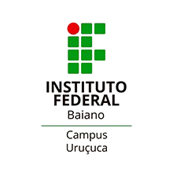

<footer>
    <div class="info-container">
        <div class="info-column">
            <h2>Contato</h2>
                <li><a href="mailto:" target="_blank"><fa-icon [icon]="faEnvelope"/>email&#64;email.com</a></li>
                <li><a href="tel:+" target="_blank"><fa-icon [icon]="faSquarePhone"/>(73) 99999-9999</a></li>
                <li><a href="https://www.instagram.com/projeto.panc/"><fa-icon [icon]="faSquareInstagram"/>&#64;projeto.panc</a></li>
        </div>
        <div class="info-column">
            <h2>Colaboradores</h2>
                <li><a href="http://lattes.cnpq.br/7448480822508604" target="_blank" rel="pagina individual do colaborador"><fa-icon [icon]="faLink"/>Alef Reis de Araújo</a></li>
                <li><a href="http://lattes.cnpq.br/6383409295105421" target="_blank" rel="pagina individual do colaborador"><fa-icon [icon]="faLink"/>Jhessica Cardoso da Silva</a></li>
                <li><a href="https://lattes.cnpq.br/9092304231150966" target="_blank" rel="pagina individual do colaborador"><fa-icon [icon]="faLink"/>Tiago Santos de Almeida</a></li>
            <h2>Cordenador(a) do Projeto</h2>
                <li><a href="http://lattes.cnpq.br/3344432105757008" target="_blank" rel="pagina individual do colaborador"><fa-icon [icon]="faLink"/>Vanessa Carvalho Cayres Pamponet</a></li>
        </div>
    </div>
        
</footer>